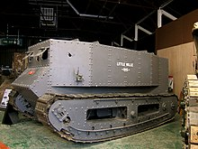
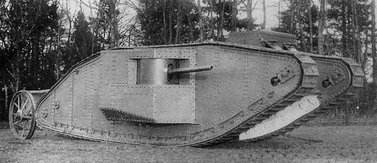

MUZEUM BRONI PANCERNEJ
- Niemieckie
- Sturmpanzer VI
- Panzerjäger Tiger
- Panzerkampfwagen VI Tiger
- Brytyjskie
- Mk III Valentine
- Mk IV Churchill
- Mk VI Crusader
- Polskie
- 7TP
- TKS
- Samochód pancerny wz.34
- Radziecke
- IS-2
- T-55
- ISU-152
- Japońskie
- Typ 97 Shinhoto Chi-Ha
- Typ 97 Te-Ke
- Typ 3 Chi-Nu
- Amerykańskie
- M4 Sherman
- M5 Stuart
- M18 Hellcat
- Francuskie
- Char B1
- Hotchkiss H-35
- Somua S-35
Początki Broni Pancernej
Pierwszy Prototyp
W czasie I wojny światowej siłom brytyjskim brakowało pojazdu, który mógłby skutecznie pokonywać okopy wroga.W 1915 roku pułkownik Ernest Swinton i pułkownik Maurice Hankey przekonali ówczesnego Pierwszego Lorda Admiralicji Winstona Churchilla, że kluczem do sukcesu są opancerzone pojazdy na gąsienicach, zdolne pokonywać okopy i tak powstał prototyp little Willie.
Warzył 16 i pół Tony, mierzył prawie 6 metrów długości, 2.8 metry szerokości i 2.7 wysokości. Był uzbrojony
w jedną armate Vickers i sześć karabinów maszynowych, a pancerz miał 10mm grubości. Był w stanie rozpędzić się do 3.5 Km/h
Pierwsza Bitwa
1 lipca 1916 roku nad rzeką Sommą we Francji rozpoczęła się bitwa będąca symbolem koszmaru walk pozycyjnych I wojny światowej. 15 września pod Sommą po raz pierwszy wykorzystano w boju czołgi, Były to czołgi Mark I pierwszy czołg wykożystany Bojowo, choć planowano wysłać 49 pojazdów w bitwie uczestniczyło tylko 18 reszta albo nie dotarła na front albo uległa awarii. Atakowały w znacznym rozproszeniu (w grupach po dwa, trzy wozy) na nieprzyjaznym terenie, pomimo to były zaskoczeniem dla Niemców, zrobiły we froncie wyrwę o szerokości kilkunastu kilometrów i głębokości kilkudziesięciu. Brytyjczycy nie wykożystali sukcesu ponieważ zaopatrzenie pozostało daleko w tyle i czołgi z braku amunicji wycofano na tyły.
Little Willie
Pierwszy prototyp Czołgu.
Mark I
Pierwszy czołg użyty w Walce